Figure: Diagram supporting the preceding content.
Review from Module 8
Review: Operations and Monitoring Foundations
Key Module 8 Ideas
- Documentation and change control reduce operational risk.
- Monitoring data (SNMP, syslog, flow, packet capture) improves
visibility.
- Baselines and alerts help teams detect and respond to anomalies
quickly.
Why This Matters in Module 9
Security operations depend on reliable telemetry and disciplined operational
processes.
Learning Outcomes
Learning Outcomes
After completing this module, you will be able to:
- Explain the CIA Triad: Confidentiality (data secrecy), Integrity (data
accuracy), and Availability (reliable access).
- Distinguish between authentication (proving identity), authorization
(granting permissions), and accounting (logging actions) in the AAA
framework.
- Describe common threats: DoS/DDoS (denial of service), malware
(viruses, worms, ransomware), and insider threats (malicious or negligent
employees).
- Explain social engineering attacks including phishing (fake emails),
vishing (voice phishing), smishing (SMS phishing), and tailgating
(physical access).
- Describe spoofing attacks: MAC spoofing (impersonating devices), IP
spoofing (forging source addresses), ARP poisoning (cache manipulation),
and DNS poisoning (name resolution hijacking).
- Identify rogue devices: rogue DHCP servers (unauthorized IP
assignment), rogue access points (evil twins), and explain mitigation using
DHCP snooping and 802.1X authentication.
- Explain password attacks: brute force (trying all combinations),
dictionary attacks (common words), rainbow tables (precomputed
hashes), and defenses (complexity, length, salting, MFA).
- Describe Defense in Depth using layered controls: physical security,
firewalls, IDS/IPS, access control lists (ACLs), encryption, and security
awareness training.
- Use Wireshark to analyze packet captures and identify security indicators:
DoS patterns, ARP poisoning, plaintext credentials, and suspicious traffic.
- Explain the role of penetration testing, vulnerability scanning,
honeypots (decoy systems), and SIEM tools in proactive security
operations.
1 Security Foundations
1.1 Core Principles and Controls
This section introduces core security principles, governance terms, and
foundational controls used in enterprise environments.
9.1 Security Terminology: The CIA Triad
The Holy Trinity of Security
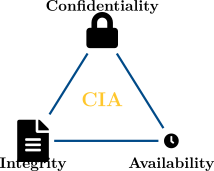
Figure: Diagram supporting the preceding content.
Audits & Compliance
Security Audits
Why audit? To find broken locks before thieves do.
- Internal: Snoopy checking his own doors.
- External: Hiring a pro to break in (Pen Test).
Regulatory Compliance (The Law)
- HIPAA (Health): Protects medical records (e.g., your doctor can’t tweet your
X-ray).
- GDPR (Privacy): EU rules giving users control over data ("Right to be
Forgotten").
- PCI-DSS (Finance): Rules for handling Credit Cards.
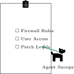
Figure: Diagram supporting the preceding content.
Encryption: Locking the Data
Symmetric (Private Key)
"The House Key"
- Uses one shared key for everything.
- Pro: Very fast (good for streaming video).
- Con: If you lose the key, you lose the house.
Asymmetric (Public Key)
"The Mailbox"
- Public Key: Anyone can put mail IN (Encrypt).
- Private Key: Only YOU can take mail OUT (Decrypt).
- Solves the key sharing problem!
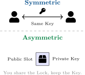
Figure: Diagram supporting the preceding content.
Vulnerability and Exploit Types
Definitions
- Vulnerability: A flaw (e.g., leaving a window open).
- Exploit: The tool to attack the flaw (e.g., a ladder).
- Patch: The board you nail over the window to fix it.
Zero-Day Attack
A vulnerability the vendor doesn’t know about yet.
- Days since fix = 0.
- Extremely dangerous because there is no patch!
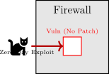
Figure: Diagram supporting the preceding content.
Defense Tool: Honeypots and Deception
What is a Honeypot?
A "Trap Server" designed to look juicy to hackers.
- Purpose: To waste the attacker’s time and study their methods.
- If anyone touches the Honeypot, it’s an attack (because no real users should be
there).
Common Tools
Canary: A device that chirps (alerts) when accessed. Cowrie: A fake SSH terminal that logs
the hacker’s commands.
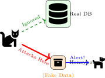
Figure: Diagram supporting the preceding content.
2 Threats and Risk Assessment
2.1 DoS, Botnets, and Malware
Threat analysis identifies disruptive and malicious behaviors so teams can
prioritize controls and response readiness.
9.2 Threat Types and Assessment
The Attacker Hierarchy
- Script Kiddies: Unskilled amateurs using tools they downloaded (Low threat).
- APTs (Nation-States): Highly skilled, government-funded spies (High threat).
The Insider Threat
Current or former employees.
- Malicious: Angry ex-admin.
- Accidental: Employee clicking a phishing link. (Most common!)
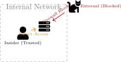
Figure: Diagram supporting the preceding content.
Denial of Service (DoS) vs. Distributed DoS (DDoS)
The "Traffic Jam" Analogy
- DoS: One car parks in front of the store entrance. (Annoying, but easy to
tow/block).
- DDoS: Every car in the city drives to the store at once. (Catastrophic, impossible
to clear quickly).
Goal
To attack Availability. The server isn’t hacked, it’s just overwhelmed.
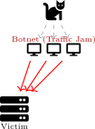
Figure: Diagram supporting the preceding content.
Botnets: The Zombie Army
Who are the Zombies?
Often insecure IoT (Internet of Things) devices:
- Smart Cameras, Smart Bulbs, Connected Fridges.
- Weak passwords make them easy targets!
Structure
-
1.
-
Herder: The criminal.
-
2.
-
C&C: Server giving orders.
-
3.
-
Zombies: The infected devices.
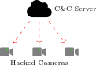
Figure: Diagram supporting the preceding content.
Malware: Virus vs. Worm
Virus (Needs a Driver)
Like a car that needs a driver, a Virus needs **YOU** to start it.
- It hides inside a legitimate file (game, document, script).
- It only infects when you open/run that file.
Worm (Self-Driving)
A Worm is a **self-driving car**.
- It doesn’t need a host file or a user.
- It scans the network, finds a hole in a neighbor’s computer, and jumps over
automatically.
- Much faster spreading than viruses.
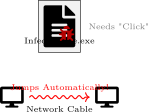
Figure: Diagram supporting the preceding content.
Malware: Trojans & Ransomware
Trojan Horse (The Trick)
Named after the Greek myth. It looks like a gift, but contains soldiers (malware).
- "Download this Screen Saver!"
- Screen saver runs, but it opens a Backdoor for the hacker.
Ransomware (The Kidnapper)
It doesn’t steal data; it locks it.
- Encrypts your homework/photos.
- Demands Crypto (Bitcoin) to buy the key.
- Advice: Never pay! (Restore from Backup).
Figure: Diagram supporting the preceding content.
Case Study: The Zombie Accountants
Scenario: 2:00 AM Alert
Agent Snoopy’s pager buzzes. The KibbleCorp webstore has crashed.
He checks the network dashboard:
- The computers in the Accounting Department are all turned ON (they should be
off).
- They are sending thousands of requests per second to the webstore.
- The accountants are asleep at home.
Detective Questions:
-
1.
-
Why did the malware likely spread as a Worm instead of a Virus?
-
2.
-
The computers are acting as a group. What is this "Army" called?
-
3.
-
Is the attack trying to steal data or stop the business?
Figure: Diagram supporting the preceding content.
Case Study Solution: The Zombie Accountants
Snoopy’s Analysis
-
1.
-
Propagation: It must be a Worm because it spread automatically while no one
was using the computers.
-
2.
-
The Army: They are a Botnet (Robot Network) of Zombies.
-
3.
-
Goal: This is a DDoS (Distributed Denial of Service). The goal is to
overwhelm the webstore (Availability), not steal data (Confidentiality).
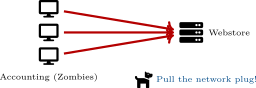
Figure: Diagram supporting the preceding content.
3 Spoofing and On-Path Attacks
3.1 Identity and Traffic Manipulation
This section examines identity and traffic manipulation attacks such as spoofing,
poisoning, and interception techniques.
9.3 Spoofing: The Fake Return Address
What is Spoofing?
Falsifying data to gain an illegitimate advantage.
- IP Spoofing: Writing a fake "Return Address" on a packet.
- Caller ID Spoofing: Scammers calling from "Your Bank" (when they are really
in a basement).
Why does this work?
The Internet (IP) is like the Mail System. It delivers to the Destination. It rarely checks if the
Sender is telling the truth!
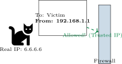
Figure: Diagram supporting the preceding content.
On-Path Attacks (The "Middle Man")
Concept: Passing Notes
Imagine Lucy passes a note to Linus in class.
- The Hacker Cat sits between them.
- He takes Lucy’s note, reads it, changes the words, and passes it to Linus.
- Linus thinks the note came from Lucy.
This is an **On-Path** (formerly Man-in-the-Middle) attack.
Tools
Wireshark (to listen) and Ettercap (to intercept).
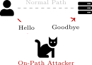
Figure: Diagram supporting the preceding content.
ARP Poisoning: The Roll Call Lie
The Vulnerability
ARP is the protocol that finds MAC addresses ("Who has IP 10.1.1.1?").
- Problem: ARP has no ID check.
- Analogy: The teacher calls "Linus?", and the Bully yells "Here!" The teacher marks
the Bully as Linus.
The Result
The Hacker Cat tells your computer "I am the Router." Your computer believes him and sends
all your internet traffic to the Cat.
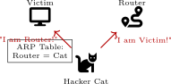
Figure: Diagram supporting the preceding content.
Tool Spotlight: MAC Spoofing
Changing Plates
Your MAC address is burned into the hardware, but software can override it.
- Analogy: Putting fake license plates on a getaway car.
- The camera (Switch/Router) sees the fake plate and lets the car through.
Why do it?
-
1.
-
To bypass MAC Filtering (Access Control Lists).
-
2.
-
To hide the device manufacturer (OUI) so hackers don’t know what you are using.
Figure: Diagram supporting the preceding content.
VLAN Hopping (Double Tagging)
The Hidden Suitcase
How do you sneak a forbidden item past a checkpoint?
- Double Tagging: Put a packet inside a packet.
- Outer Tag (VLAN 10): "This is for the lobby." The first switch opens it.
- Inner Tag (VLAN 20): "This is for the Secure Vault." The switch sees this after
opening the first one and sends it to the vault!
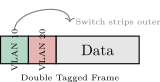
Figure: Diagram supporting the preceding content.
Case Study: The Coffee Shop Interception
Scenario: Free Wi-Fi Danger
Agent Snoopy is at the "KibbleKafe." He connects to the open Wi-Fi to check his
bank.
The Hacker Cat is sitting in the corner. Suddenly, Snoopy’s browser warns:
"Certificate Error: The identity of bank.com cannot be verified."
Snoopy realizes his traffic is being detoured through the Cat’s laptop.
Detective Questions:
-
1.
-
What Layer 2 protocol is the Hacker Cat abusing to redirect the traffic?
-
2.
-
What is the Hacker Cat’s position called (sitting between Snoopy and
the Router)?
-
3.
-
Why did Snoopy see a Certificate Error (HTTPS)?
Figure: Diagram supporting the preceding content.
Case Study Solution: The Coffee Shop Interception
Analysis
-
1.
-
Protocol: ARP. The Cat used ARP Poisoning to tell Snoopy "I am the Router."
-
2.
-
Position: On-Path (Man-in-the-Middle).
-
3.
-
Error: The Cat tried to read encrypted (HTTPS) traffic. Since he doesn’t have
the Bank’s private key, he used a fake certificate. Snoopy’s browser detected the
fake.
Figure: Diagram supporting the preceding content.
4 Rogue Services and Infrastructure Attacks
4.1 Rogue DHCP, DNS, and Access Points
Rogue infrastructure services can redirect or intercept traffic; this section covers
common patterns and mitigations.
9.4 Rogue Devices and Evil Twins
Rogue Devices
Unauthorized hardware plugged into the network.
- Employee brings a home router to get better Wi-Fi.
- Hacker hides a "Raspberry Pi" behind a printer.
The Evil Twin (Wi-Fi)
The "Fake Starbucks" Attack.
- Attacker sets up a Wi-Fi spot with the exact same name (SSID) as the real one.
- Your phone sees two "KibbleCorp-WiFi" networks.
- It connects to the strongest signal (the attacker), giving them your data.
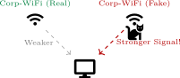
Figure: Diagram supporting the preceding content.
Rogue DHCP Servers
The Danger
If an attacker plugs in a router, it might start handing out IP addresses.
The "Race" Condition
Clients accept the first DHCP OFFER they receive.
- Real DHCP: "Here is IP 10.1.1.5, Gateway is Router."
- Rogue DHCP: "Here is IP 10.1.1.5, Gateway is ME (The Cat)."
- Result: All internet traffic detours through the attacker.
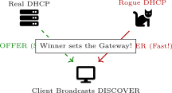
Figure: Diagram supporting the preceding content.
Defending with DHCP Snooping
The Solution: DHCP Snooping
A security feature on switches that acts like a Club Bouncer.
Trust Boundaries
- Trusted Ports: Uplinks to real servers. "VIPs allowed to speak."
- Untrusted Ports: Regular user ports. "You can listen, but you cannot hand out
IPs."
If an OFFER packet comes from an Untrusted port, the switch drops it.
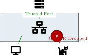
Figure: Diagram supporting the preceding content.
DNS Attacks: Poisoning the Phonebook
Concept: The Phonebook
DNS turns Names (google.com) into Numbers (8.8.8.8).
DNS Poisoning
"Changing the entry in the book."
- Attacker hacks the DNS Server.
- Changes "BankOfAmerica.com" to the Attacker’s IP.
- You type the correct URL, but your browser goes to the fake site.
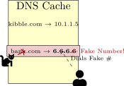
Figure: Diagram supporting the preceding content.
5 Human-Centered Threats
5.1 Social Engineering and Credential Attacks
Human-targeted attacks remain a primary risk vector, requiring awareness,
verification processes, and credential hardening.
9.5 Social Engineering: Hacking the Human
Phishing (The Bait)
Sending fraudulent messages to trick users.
- Phishing: Regular email scams ("You won a prize!").
- Spear Phishing: Targeted ("Hi Linus, this is your boss...").
- Whaling: Targeting the CEO/Big Fish.
Other Variants
- Vishing: Voice/Phone (Scam calls).
- Smishing: SMS/Text messages.
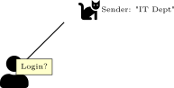
Figure: Diagram supporting the preceding content.
Physical Social Engineering
Techniques
- Tailgating: Following an authorized person through a secure door ("Hold the door,
please!").
- Dumpster Diving: Searching trash for sticky notes with passwords.
- Shoulder Surfing: Watching someone type their PIN or password.
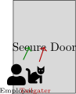
Figure: Diagram supporting the preceding content.
Principles of Influence
Why does it work?
Attackers exploit human psychology ("Hacking the Human").
- Authority: "I am the CEO/Police, do this now!"
- Intimidation: "Do it or you’re fired."
- Consensus: "Everyone else is doing it."
- Scarcity: "Only 2 iPhones left!"
- Urgency: "Account expires in 10 minutes!"
- Trust: "I know your friend Linus."
Figure: Diagram supporting the preceding content.
Password Attacks
Brute Force
Trying every possible combination (aaaa, aaab...).
- Analogy: Trying every single key on a keychain until one fits.
- Guaranteed to work, but takes forever.
Dictionary Attack
Using a list of common words (dictionary).
- Analogy: Trying the most common house keys first.
- Fails if the password is complex ("Xy9#m!").
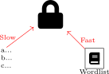
Figure: Diagram supporting the preceding content.
Tool Spotlight: John the Ripper & Salting
John the Ripper (JtR)
A tool used to test password strength by trying to crack them.
Defense: Salting
"Adding Spice to the Recipe."
- Before saving a password, we add random characters ("Salt").
- If Linus and Lucy both use "password123", their hashes will look completely
different because they have different salts.
- Prevents pre-calculated attacks (Rainbow Tables).
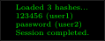
Figure: Diagram supporting the preceding content.
Case Study: Intern Ike and the "CEO"
Scenario: 4:55 PM on a Friday
Intern Ike at KibbleCorp receives an email:
"From: ceo@kibble-corp.net (Notice the .net!) Subject: URGENT WIRE TRANSFER I am stuck
in a meeting. Wire $5,000 to this vendor immediately. If this isn’t done by 5:00 PM, it will be
your fault. Do it now!"
Questions:
-
1.
-
What specific type of social engineering is this?
-
2.
-
Which "Principles of Influence" are being used?
-
3.
-
What should Ike do?
Figure: Diagram supporting the preceding content.
Case Study Solution: Intern Ike
Snoopy’s Advice
-
1.
-
Type: Whaling (impersonating a big fish/exec) or Spear Phishing.
-
2.
-
Principles:
- Authority ("I am the CEO").
- Urgency ("By 5:00 PM").
- Intimidation ("It will be your fault").
-
3.
-
Action: Verify Out-of-Band. Do not reply to the email. Call the CEO’s assistant or
walk to their office. Report to Snoopy immediately.
6 Mitigation and Security Operations
6.1 Analysis, Defense in Depth, and Next Steps
The final section synthesizes offensive/defensive perspectives and maps them to
layered mitigations and operational response.
Recap: Offensive vs. Defensive
The Attacker (Red Team)
- Spoofing: Hiding identity (Masks).
- Poisoning: Redirecting traffic (Fake Signs).
- Cracking: Breaking passwords (Lockpicking).
The Defender (Blue Team)
- Snooping: Stopping rogue DHCP (Bouncers).
- Honeypots: Trapping intruders (Decoys).
- Analysis: Seeing the truth (Surveillance).
Figure: Diagram supporting the preceding content.
Analyzing the Attack with Wireshark
Red Flags
- Flag 1: Thousands of packets from one IP (DoS).
- Flag 2: Duplicate IP addresses (ARP Poisoning).
- Flag 3: Plaintext passwords (HTTP/Telnet).
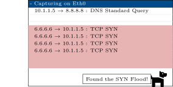
Figure: Diagram supporting the preceding content.
Defense in Depth: Mitigation Strategies
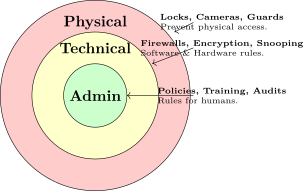
Figure: Diagram supporting the preceding content.
No Single Solution
A firewall won’t stop a user from holding the door open for a hacker. You need all three layers
(Defense in Depth).
9.6 Additional Resources
Vulnerability Databases
- CVE (MITRE): The dictionary of vulnerabilities.
- NVD (NIST): Adds severity scores to CVEs.
Learning Tools
- OWASP Top 10: Web risks.
- TryHackMe: Legal practice labs.
Figure: Diagram supporting the preceding content.
Module Summary
Module 9.0 Summary
Key Concepts:
- CIA Triad: Confidentiality (encryption, access control), Integrity
(hashing, digital signatures), Availability (redundancy, DDoS mitigation).
- AAA: Authentication (who are you?), Authorization (what can you
do?), Accounting (what did you do?). Use TACACS+ or RADIUS.
- DoS/DDoS: Denial of Service attacks flood targets with traffic. Mitigate
with rate limiting, traffic filtering, and CDN protection.
- Malware types: Viruses (attach to files), Worms (self-replicate), Trojans
(disguised), Ransomware (encrypt files for payment). Use antivirus, patching,
and backups.
- Social engineering: Human-based attacks. Phishing (fake emails),
Vishing (voice calls), Smishing (SMS), Tailgating (physical access).
Defense: training and awareness.
- Spoofing: MAC spoofing (change NIC address), IP spoofing (forge
source IP), ARP poisoning (man-in-the-middle), DNS poisoning
(redirect to malicious sites).
- Rogue devices: Rogue DHCP (unauthorized IP assignment, VLAN
hopping). Rogue AP (evil twin). Mitigate with DHCP snooping, 802.1X
(port-based NAC), and wireless IDS.
- Password attacks: Brute force (all combinations), Dictionary (common
words), Rainbow tables (precomputed hashes). Defense: complexity (8+
chars, mixed case, symbols), salting, MFA.
- Defense in Depth: Layered security. Physical security, network
segmentation, firewalls, IDS (detect), IPS (prevent), ACLs, encryption
(TLS, VPN), security training.
- Wireshark: Packet capture for forensics. Identify DoS floods, ARP poisoning
(duplicate MACs), plaintext passwords (HTTP, Telnet). Filter by protocol,
IP, port.
Security Operations:
- Penetration testing: Authorized simulated attacks (red team) to find
vulnerabilities before attackers do.
- Vulnerability scanning: Automated tool (Nessus, OpenVAS) identifying
known CVEs and misconfigurations.
- Honeypots: Decoy systems to lure attackers, gather intelligence, and
distract from production assets.
- SIEM: Security Information and Event Management. Aggregate logs,
correlate events, generate alerts. Examples: Splunk, QRadar.
- Security policies: Acceptable Use Policy (AUP), Incident Response Plan,
Password Policy, Data Classification, Physical Access Controls.
Conclusion
This module covered network security concepts: the CIA Triad and AAA
framework, common threats (DoS, malware, social engineering), spoofing attacks
(MAC, IP, ARP, DNS), rogue devices and password cracking, and Defense in
Depth strategies. You learned how to analyze attacks using Wireshark and
implement layered security controls. This concludes the network fundamentals
series—you are now equipped with foundational knowledge to secure, monitor,
and operate enterprise networks.
Questions?
Figure: Diagram supporting the preceding content.